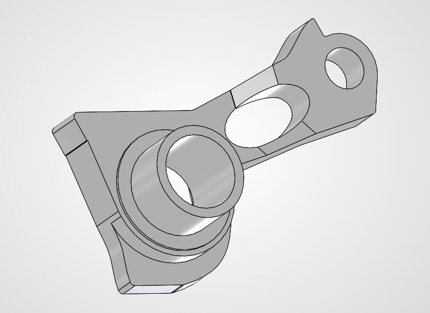
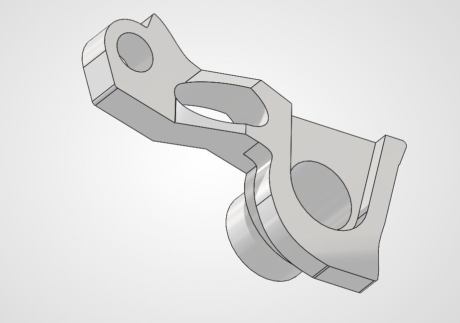
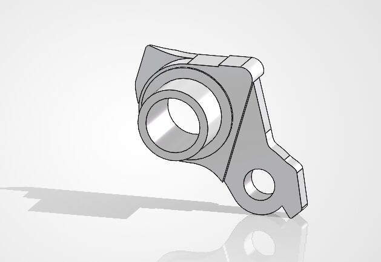
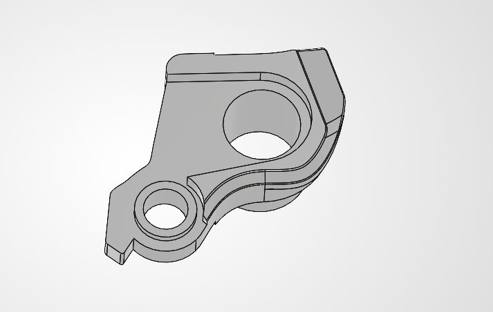
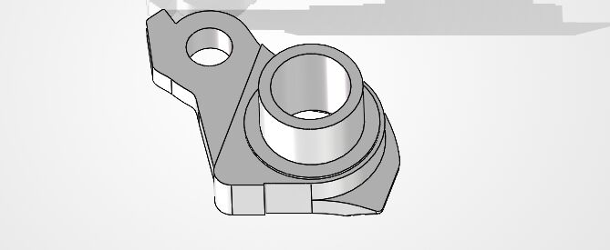
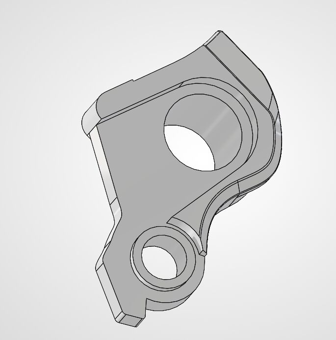

Manufacturing drawings for a carbon frame
I prepared 2D SolidWorks drawings that specify the frame dimensions on which add-on components depend, so that brake, drivetrain, and cockpit components interface correctly with the frame.
- Datums: dimensions were referenced to the bottom bracket and rear dropouts.
- Tolerancing: critical interfaces, such as brake mounting holes, were held to tight tolerances, while less critical depths and sizes were given wider tolerances. GD&T was used to communicate this intent.
- Process considerations: fork and rear dropouts can deflect during curing, so these features were assigned wider tolerances than would apply to a machined part.
Reverse engineering of the Shimano DH and SRAM UDH
In preparation for the company's own derailleur hanger design for an upcoming road and track bicycle, I modeled the Shimano direct-mount hanger and the SRAM Universal Derailleur Hanger (UDH) in SolidWorks using calipers, a protractor, and hand sketches.






Figure 1. SolidWorks models of the replicated derailleur hangers.
Outcomes
- Delivered dimensioned manufacturing drawings with GD&T callouts for the carbon frame.
- Both hanger replicas were 3D printed and interfaced correctly with a production frame and derailleur, allowing their use on the prototype bicycle.